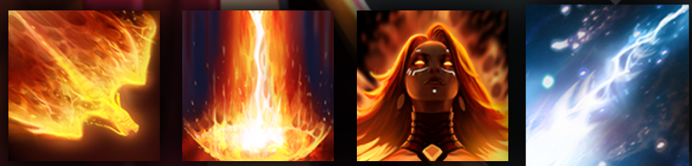

LINA
INCREASES ATTACK AND SPEED WITH EVERY SPELL
HISTORY
The sibling rivalries between Lina the Slayer, and her younger sister Rylai, the Crystal Maiden, were the stuff of legend in the temperate region where they spent their quarrelsome childhoods together. Lina always had the advantage, however, for while Crystal was guileless and naive, Lina's fiery ardor was tempered by cleverness and conniving. The exasperated parents of these incompatible offspring went through half a dozen homesteads, losing one to fire, the next to ice, before they realized life would be simpler if the children were separated. As the oldest, Lina was sent far south to live with a patient aunt in the blazing Desert of Misrule, a climate that proved more than comfortable for the fiery Slayer. Her arrival made quite an impression on the somnolent locals, and more than one would-be suitor scorched his fingers or went away with singed eyebrows, his advances spurned. Lina is proud and confident, and nothing can dampen her flame.
ABILITIES
PAIRD WELL WITH
DARK WILLOW
LION
SVEN